cd ~/sandbox-git
git init --bare --shared ~/sandbox-git/test-repo.git
git clone test-repo.git repo-clone1
git clone test-repo.git repo-clone2Git & Merge & Rebase & Flow (English version)
30 junio 2017
Tags: git merge rebase git-flow
TweeterGit & Merge & Rebase & Flow
En esta ocasion vamos a realizar una serie de operaciones en un repositorio git. Intentaremos simular situaciones tipicas de trabajo en grupo, con distintas manerasP de enfocar la union de los distintos trabajos.
Trabajar con dos ramas sin ancestros comunes.
Lo primero, inicializar un repo local, con opcion de que sea compartido por varios usuarios.
Despues nos vamos al directorio 1, y añadimos un primer fichero, en el commit indicamos un nombre de usuario: User1.
cd repo-clone1
touch README
git add .
git commit --author="User1 <user1@git.com>" -m "Initial commit"
git push -u origin masterPara ver desde consola podemos añadir lo siguiente a ~/.gitconfig bajo [alias]
| tree = log --graph --full-history --all --color --pretty=tformat:%x1b[31m%h%x09%x1b[32m%d%x1b[0m%x20%s%x20%x1b[33m(%an)%x1b[0m |
El repo queda entonces asi.
Despues nos vamos a la segunda carpeta y solo hacemos "fetch", y creamos el mismo fichero que creo el otro usuario. Lo comiteamos, luego intentamos push.
cd ../repo-clone2
git fetch
vi README
git add README
git commit --author="User2 <user2@git.com>" -m "Other user change"
git pushPero obtenemos el siguiente error.
! [rejected] master -> master (non-fast-forward)
error: failed to push some refs to '/home/jose/sandbox-git/test-repo.git'
hint: Updates were rejected because the tip of your current branch is behind
hint: its remote counterpart. Integrate the remote changes (e.g.
hint: 'git pull ...') before pushing again.
hint: See the 'Note about fast-forwards' in 'git push --help' for details.| No se puede hacer push sino se hace un pull… en este momento el arbol esta asi… |
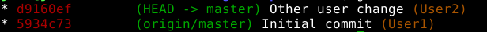
git pull| The default behavior has changed since git 2.9 |
"git merge" used to allow merging two branches that have no common base by default, which led to a brand new history of an existing project created and then get pulled by an unsuspecting maintainer, which allowed an unnecessary parallel history merged into the existing project. The command has been taught not to allow this by default, with an escape hatch --allow-unrelated-histories option to be used in a rare event that merges histories of two projects that started their lives independently.
En este caso, hemos partido de 2 ramas independientes, y el pull de una rama (donde ya tenemos un commit) provoca una especie de "merge". En este caso (por no tener ancestros comunes) debemos hacerlo con:
git pull origin master --allow-unrelated-historiesY queda esto
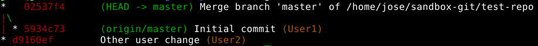
Ahora ya podemos hacer:
git pushY asi queda el repo:
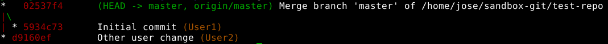
Trabajar en una rama, sin haberla actualizado
Vamos ahora a probar en el directorio 1, a crear con git-flow una feature, crear un nuevo fichero y luego… crear otra feature en el directorio 2, creando otro fichero.
Luego en el directorio 1, cerramos la feature, luego en el directorio 2,
| Mergeamos develop en nuestra rama, y luego mergeamos nuestra rama en develop (cerrando la feature). |
cd ../repo-clone1
git flow init
git flow feature start user1
vi feature-user1.txt
git add feature-user1.txt
git commit --author="User1 <user1@git.com>" -m "Commit in feature-user1"
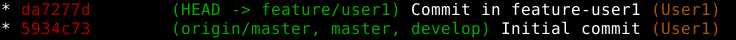
| Pero se nos "olvido" hacer fetch/pull antes de empezar… y aqui empieza el lio… |
git fetch
git pull origin masterAhora (a punto de terminar la historia) tenemos el arbol asi.
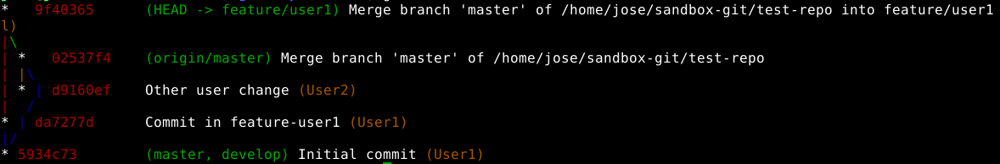
Cerramos la feature
git flow feature finishSummary of actions:
-
The feature branch feature/user1 was merged into develop
-
Feature branch feature/user1 has been locally deleted
-
You are now on branch develop
| Subimos develop (por defecto git-flow no hace push), que aun no lo habiamos hecho. |
git push origin developquedando el arbol, asi:
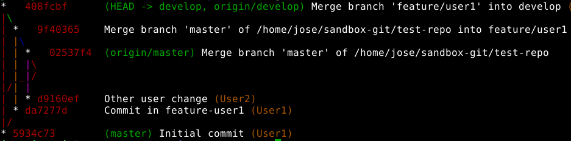
Mantener rama actualizada con los cambios de develop
Ahora nos vamos al directorio 2, nos actualizamos, creamos una feature, hacemos algo en el fichero README comiteamos, pero antes de cerrar la feature, cambiamos de carpeta 1 y modificamos el README, volvemos al directorio original y antes de cerrar feature, mergeamos develop en nuestra rama.
cd ../repo-clone2
git fetch
git checkout develop
git pull
git flow init
git flow feature start user2
vi feature-user2.txt
git add feature-user2.txt
git commit --author="User2 <user2@git.com>" -m "Commit in feature-user2"
cd ../repo-clone1
vi feature-user1.txt
git add feature-user1.txt
git commit --author="User1 <user1@git.com>" -m "Update develop file feature1"
git push origin developAqui (carpeta 1) todavia no sabemos nada de la feature2, quedando el arbol asi
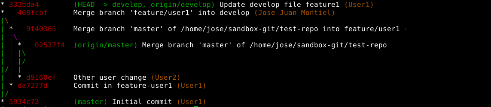
El "problema" con rebase es que altera las lineas de historia, para bien o para mal.
Si seguimos el enfoque clasico, para mantener al dia nuestra feature2, debemos mergear a menudo con develop, o por lo menos, antes de cerrar la feature.
cd ../repo-clone2
git fetch
git pull origin developEsto, asi escrito realiza un merge directo, pues estamos haciendo pull de otra rama (develop) en la de la feature.
| Un pull de una rama en otra que no es la suya, equivale a un merge. |
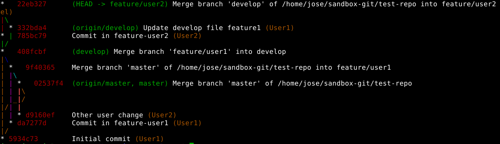
Merge, tras un pull (actualizacion), de una rama sobre otra
Una manera, desde mi punto de vista, mas controlada de enfocar los merge (o bien por tener actualizada una rama, o por mezclarla luego en otra), podria haber sido: un fetch para actualiar, cambiando a develop, hacer pull y luego volviendo a la feature y haciendo merge.
Mantener rama actualizada con un rebase.
Pero, probemos otra vez (vamos a carpeta 1, hacemos cambio en develop y lo subimos), pero esta vez hacemos un rebase (usando git flow)
cd ../repo-clone1
vi feature-user1.txt
git add feature-user1.txt
git commit --author="User1 <user1@git.com>" -m "Update develop file feature1"
git push origin develop
cd ../repo-clone2
git fetch
git flow feature rebase user2Will try to rebase user2 which is based on develop… First, rewinding head to replay your work on top of it… Applying: Commit in feature-user2 Applying: Update develop file feature1
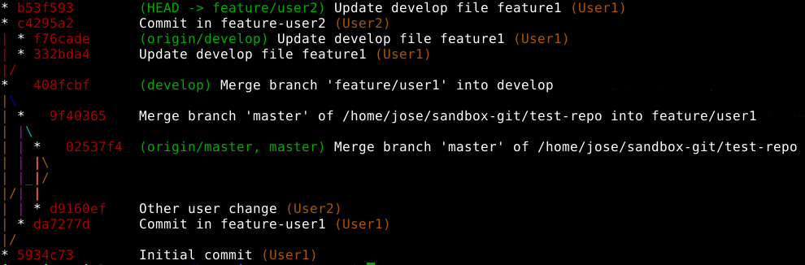
git flow feature finishBranches develop and origin/develop have diverged. Fatal: And branch develop may be fast-forwarded.
Esto solo quiere decir que la rama donde estamos tabajando no esta actulzada (similar al primer ejemplo).
git checkout develop
Switched to branch 'develop'
Your branch is behind 'origin/develop' by 2 commits, and can be fast-forwarded.
(use "git pull" to update your local branch)
git pull
Updating 408fcbf..f76cade
Fast-forward
feature-user1.txt | 3 +++
1 file changed, 3 insertions(+)
git checkout feature/user2
Switched to branch 'feature/user2'
git flow feature finish
Switched to branch 'develop'
Your branch is up-to-date with 'origin/develop'.
Auto-merging feature-user1.txt
CONFLICT (content): Merge conflict in feature-user1.txt
Automatic merge failed; fix conflicts and then commit the result.
There were merge conflicts. To resolve the merge conflict manually, use:
git mergetool
git commit
You can then complete the finish by running it again:
git flow feature finish user2El rebase nos ha generado conflictos, que a la hora de hacer el merge, nos da problemas.
git mergetool
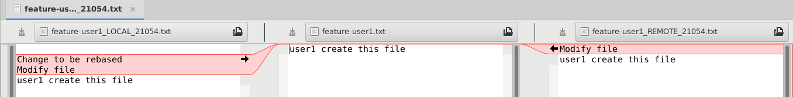
Pues altera la linea de tiempo de la rama donde lo hace. Resolvemos el conflicto y subimos cambios.
git add feature-user1.txt
git commit --author="User2 <user2@git.com>" -m "Resolve rebase y merge"
git push origin developNos queda este arbol
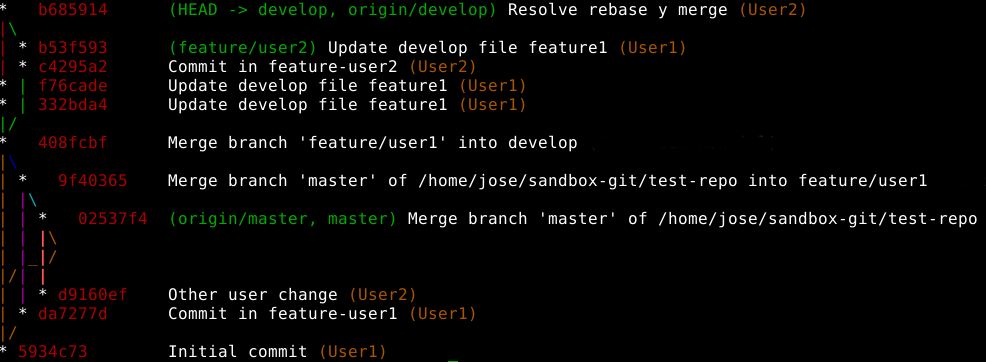
Policia del arbol de git.
Si consideramos que una rama se crea para una funcionalidad, y todo el conjunto de commits que se relizan en ella, incluyendo los merge desde develop, no deben quedar reflejado en el arbolo final tras el merge, --no-ff es nuestro amigo.
Creemos una feature3, hagamos algun cambio, hagamos algun cambio en develop, llevemoslo a la rama de la feature3, y cuando terminemos, merge con no-ff.
cd ~/sandbox-git/repo-clone1
git fetch
git pull origin develop
cd ~/sandbox-git/repo-clone2
git fetch
git pull origin develop
git flow feature start feature3
vi feature3-user2.txt
git add feature3-user2.txt
git commit --author="User2 <user2@git.com>" -m "File from feature 3"
cd ~/sandbox-git/repo-clone1
vi change-in-develop.txt
git add change-in-develop.txt
git commit --author="User1 <user1@git.com>" -m "change-in-develop"
git push origin develop
cd ~/sandbox-git/repo-clone2
git checkout develop
git fetch
git pull
git checkout feature/feature3
git merge developEl arbol lo tenemos asi… ahora tras el merge, hagamos otro cambio y reintegremos en develop como un solo commit.
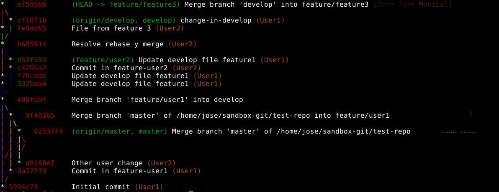
vi feature3-another-user2-file.txt
git add feature3-another-user2-file.txt
git commit --author="User2 <user2@git.com>" -m "File from feature 3"
git checkout develop
git merge feature/feature3 --no-ff
git push origin --delete feature/feature3
git branch -d feature/feature3
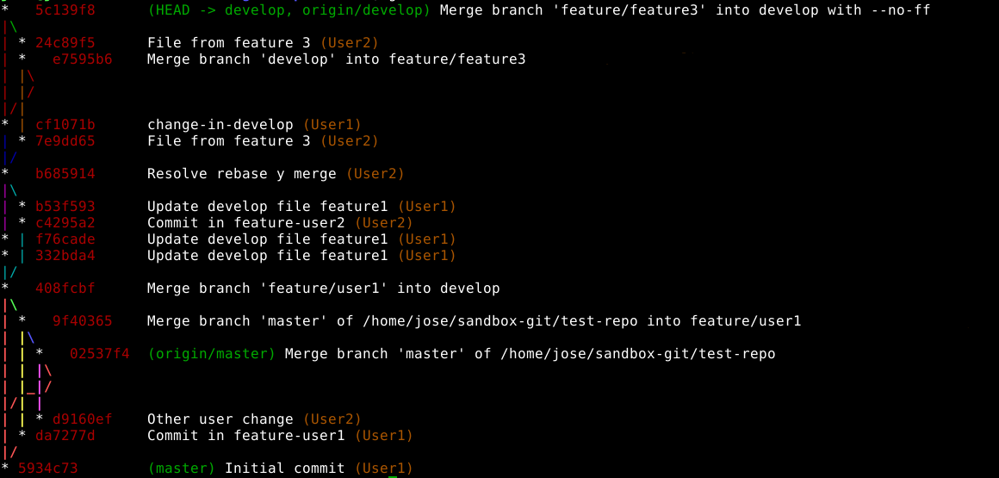
Observemos como queda limpio la rama develop

Referencias: